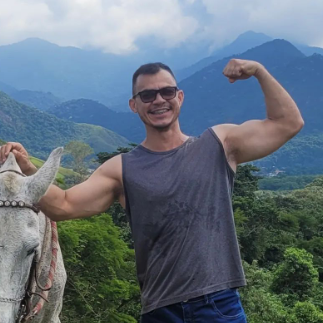

Fernando Pascoal, 33 anos, estudante de Educação Física e Nutrição, fisiculturista amador e pai de gato.
É um entusiasta da musculação, gosta de explorar o próprio potencial e o potencial de outras pessoas sobre transformar a si a mesmo através de hábitos diários, sem receitas milagrosas.
Acredito que o esforço e a persistência são as melhores ferramentas para lapidar a si mesmo.
Felipe Pascoal, 30 anos. Faz nada, só come e joga LOL.